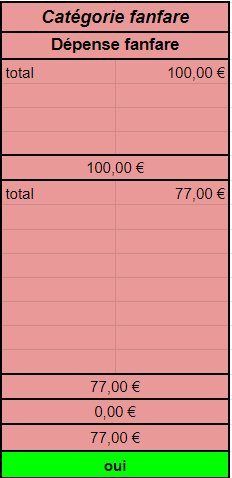

La fanfare, connu aussi comme les Pist’On Fire, est un club au sein du BDA, ayant pour but de réunir les différents musiciens qui jouent d’instruments orchestraux afin d’animer les différents événements sportifs et autres des Mines Saint-Etienne. LLe respo du mandant 2023-2024 était Marceau Delnatte.
La fanfare est dépendante entièrement du BDA en termes de budget, ainsi la totalité du matériel attribué à la fanfare est propriété du BDA.
En plus des instruments, la fanfare dispose d’huile pour les valves des cuivres et de différentes baguettes pour les différentes percussions.
Voici la liste des instruments étant à la fanfare:
La salle fanfare se situait anciennement là où se trouve les bancs et tables en bois utilisées lors des repas au Cercle. Les instruments ont dû être déplacés dans le local se situant sous les escaliers extérieurs du côté A de la ME. Les locaux sont partagés avec Respire, Wi’Mines L’Ourson, le GALA et le bureau technique, la première salle à gauche étant celle de la fanfare.
La fanfare est généralement conviée pour les événements sportifs importants comme l’Interpromo, mais surtout le Cartel. Dans le cadre de la note d’ambiance qu’est attribué chaque délégation au Cartel, la fanfare peut y jouer un rôle très important. Elle permet de lancer les chants connus et de se faire entendre, d’avoir du rythme avec des musiques classiques comme Tetris…
Il faut voir avec le BDS plusieurs semaines en avance par rapport aux places des musiciens et aux instruments dans la soute. Dans tous les cas, il faut prévoir d’amener des percussions car n’importe qui ayant une dextérité moyenne peut garder un rythme sur la grosse caisse.
Autrefois forte d’une dizaine de membre, la fanfare est aujourd’hui légèrement décrépie. À la fois entre manque de musiciens et par manque d’un responsable compétent, l’organisation de la fanfare cette année fut décevante, soyons honnête.
Entre les notes du précédent responsable de la fanfare et mes propres constats, voici ce que nous pouvons dire sur comment améliorer la fanfare :
Cela ne va pas être de toute aisance, mais il se peut qu’un jour, les Pist’On Fire regagnent leur flamme d’antan.
La fanfare a dépensé 77€, a encaissé 0€. Elle a respecté son budget de 100€. Le budget a permis de racheter toutes les baguettes des tambours, ainsi que des hanses pour les instruments.
